1. Example Gallery#
1.1. Achromat#
File: examples/achromat.py
This example demonstrates the effect of an achromatic doublet on the dispersion. Ray sources consist of different monochromatic spectral lines to show the different focal lengths. The “Use achromatic doublet” option in the “Custom” GUI tab toggles the use of this doublet. In the unchecked case a standard doublet with same optical power of 30 D is simulated, showing significant longitudinal chromatic aberration (LCA).
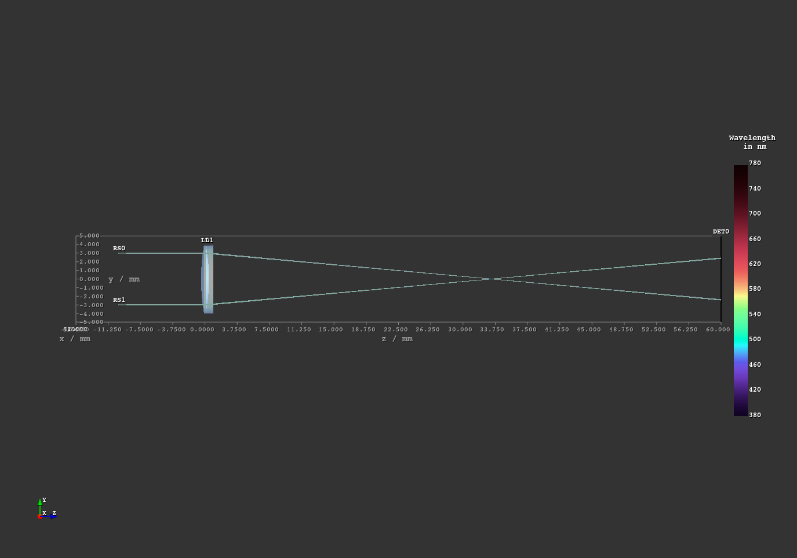
Fig. 1.1 Overview of the scene#
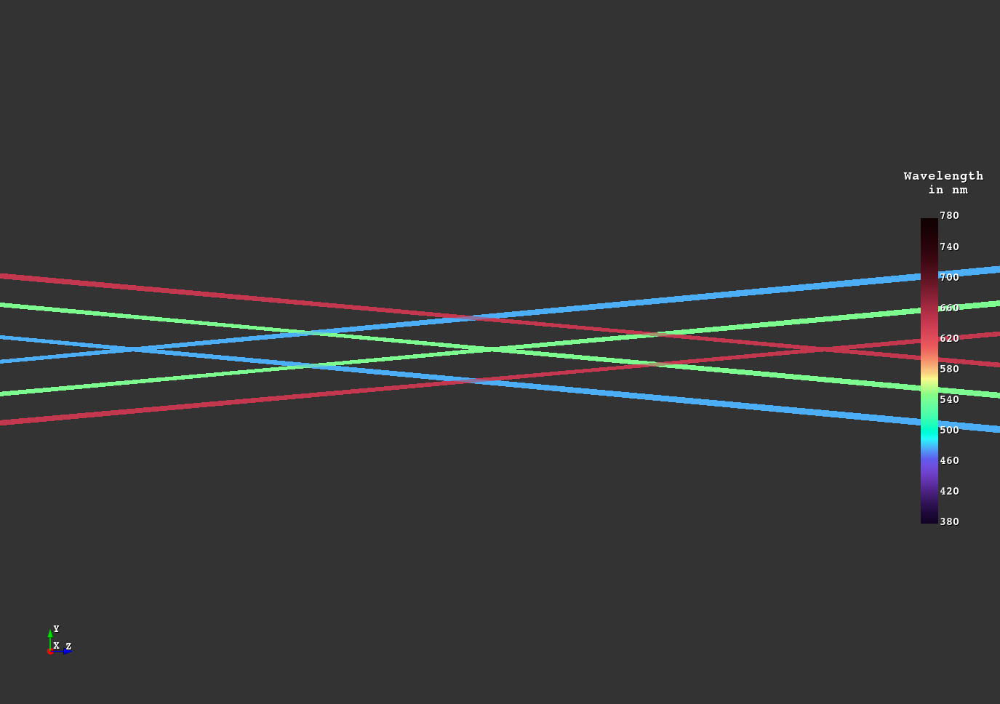
Fig. 1.2 Uncorrected case with 1.06 D difference in optical power between blue and red.#
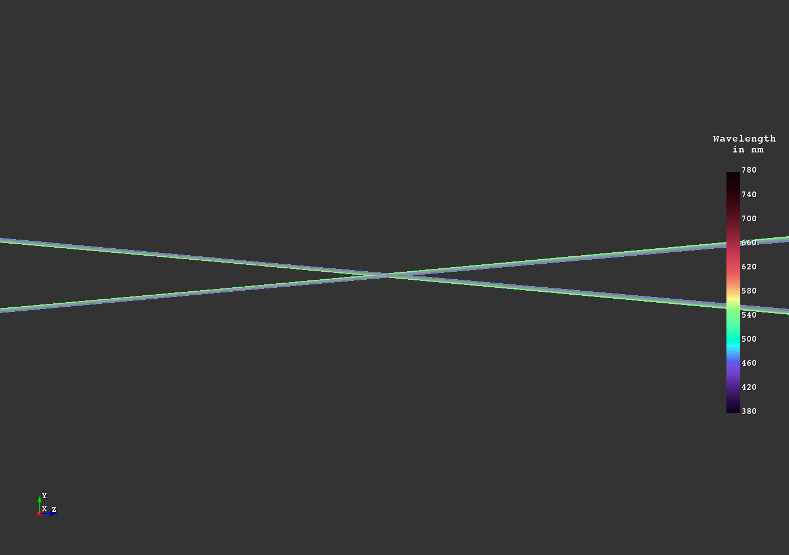
Fig. 1.3 The achromatic doublet reduces the LCA to just 0.03 D.#
1.2. Arizona Eye Model#
File: examples/arizona_eye_model.py
This example is a demonstration of human eye vision with adaptation at a distance of 66 cm. The Arizona eye model is employed to simulate a resolution chart. This eye model accurately matches on- and off-axis aberration levels from clinical data and accounts for wavelength and adaptation dependencies.
In the “Custom” tab of the GUI there are options available to change the pupil diameter and adaptation of the eye.
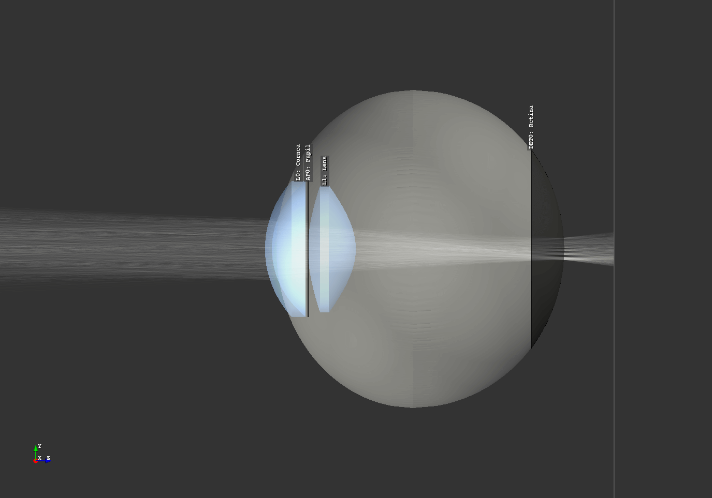
Fig. 1.4 The Arizona eye model inside the raytracer.#
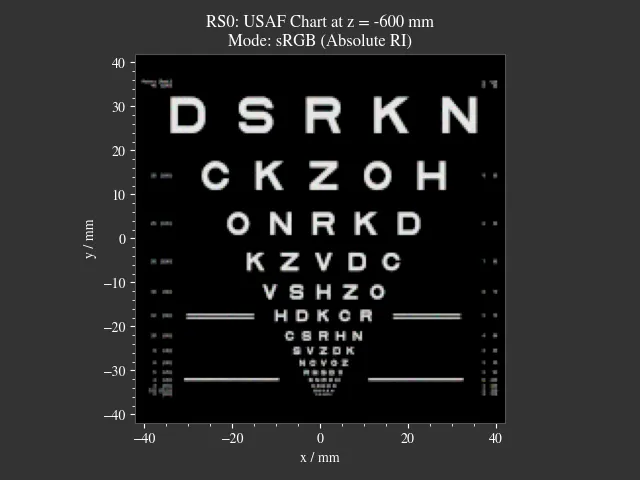 |
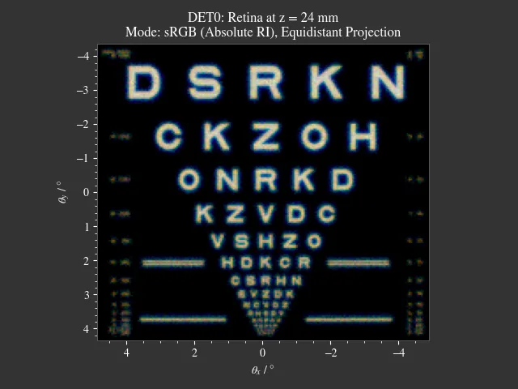 |
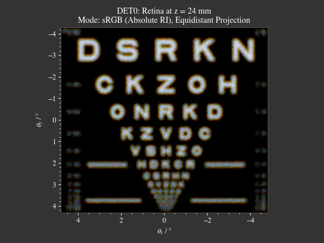 |
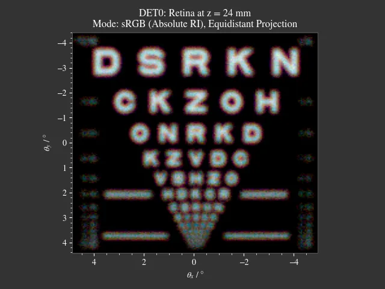 |
1.3. Astigmatism#
File: examples/astigmatism.py
This script showcases astigmatism by simulating sagittal and meridional off-axis rays. You can control their angle by changing their setting in the “Custom” Tab in the GUI. Sagittal (blue) and meridional (red) rays are highlighted in different colors, making their focal positions easier to visualize.
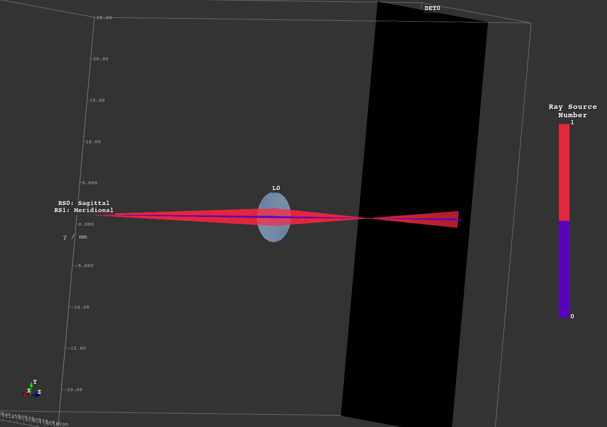
Fig. 1.5 On-axis case#
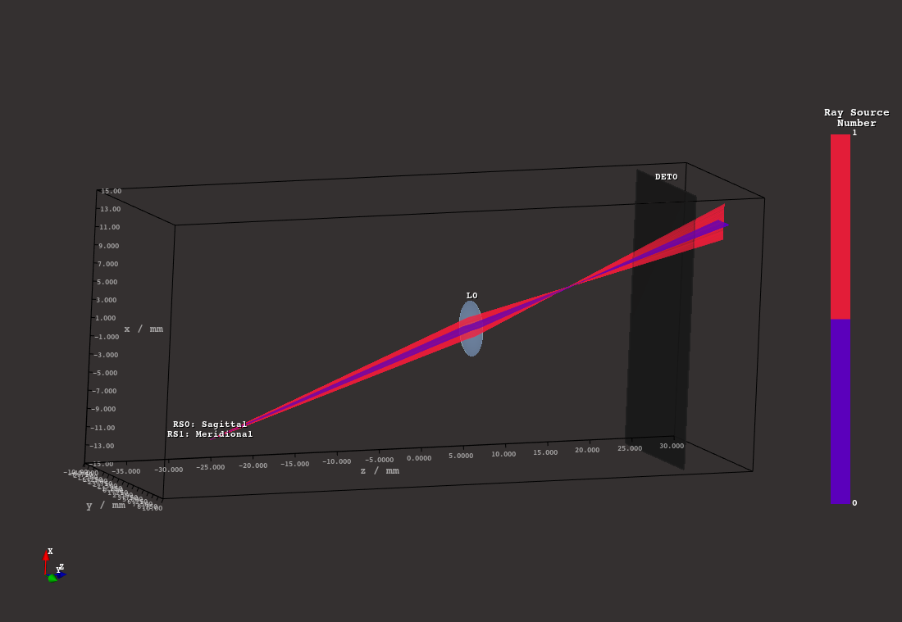
Fig. 1.6 Off-axis case#
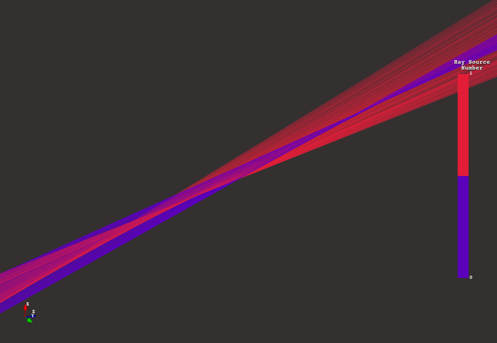
Fig. 1.7 Off-axis case, zoomed in#
1.4. Brewster Polarizer#
File: examples/brewster_polarizer.py
A setup with three different light rays impinging on multiple planar surfaces with an incident angle equal to the Brewster angle. Depending on the polarization direction we can see a huge difference in the light’s transmission.

Fig. 1.8 Brewster angle demonstration.#
1.5. Cosine Surfaces#
File: examples/cosine_surfaces.py
An example with two lenses with orthogonal cosine modulations on each side. Creates rectangular, kaleidoscope-like images inside the beam path.

Fig. 1.9 Scene overview.#
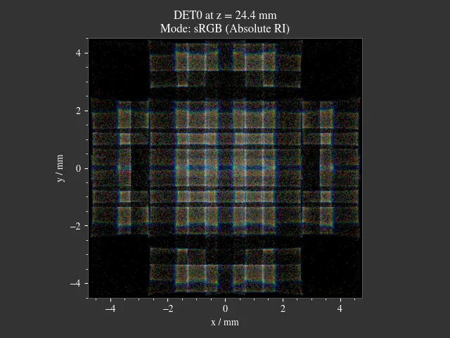 Fig. 1.10 First detector image# |
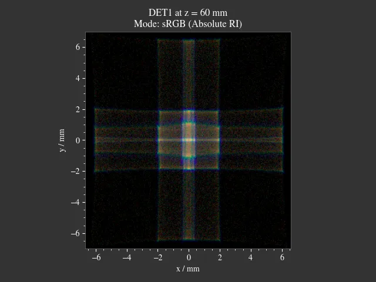 Fig. 1.11 Second detector image# |
1.6. Double Gauss#
File: examples/double_gauss.py
Example simulation of the double gauss Nikkor Wakamiya, 100mm, f1.4 objective. The simulation traces point sources from a distance of -50m and renders their PSF. Each point source is shown in a different color.
# |
T |
Distance |
Rad Curv |
Diameter |
Material |
n |
nd |
Vd |
|---|---|---|---|---|---|---|---|---|
0 |
S |
20 |
inf |
100 |
basic/air |
1.000 |
1.000 |
89.30 |
1 |
S |
5 |
78.36 |
76 |
1.797 |
1.797 |
45.50 |
|
2 |
S |
9.8837 |
469.5 |
76 |
basic/air |
1.000 |
1.000 |
89.30 |
3 |
S |
0.1938 |
50.3 |
64 |
1.773 |
1.773 |
49.40 |
|
4 |
S |
9.1085 |
74.38 |
62 |
basic/air |
1.000 |
1.000 |
89.30 |
5 |
S |
2.9457 |
138.1 |
60 |
1.673 |
1.673 |
32.20 |
|
6 |
S |
2.3256 |
34.33 |
51 |
basic/air |
1.000 |
1.000 |
89.30 |
7 |
S |
16.07 |
inf |
49.6 |
basic/air |
1.000 |
1.000 |
89.30 |
8 |
S |
13 |
-34.41 |
48.8 |
1.740 |
1.740 |
28.30 |
|
9 |
S |
1.938 |
-2907 |
57 |
1.773 |
1.773 |
49.40 |
|
10 |
S |
12.403 |
-59.05 |
60 |
basic/air |
1.000 |
1.000 |
89.30 |
11 |
S |
0.3876 |
-150.9 |
66.8 |
1.788 |
1.788 |
47.50 |
|
12 |
S |
8.333 |
-57.89 |
67.8 |
basic/air |
1.000 |
1.000 |
89.30 |
13 |
S |
0.1938 |
284.6 |
66 |
1.788 |
1.788 |
47.50 |
|
14 |
S |
5.0388 |
-253.2 |
66 |
basic/air |
1.000 |
1.000 |
89.30 |
15 |
S |
73.839 |
inf |
86.53 |
basic/air |
1.000 |
1.000 |
89.30 |
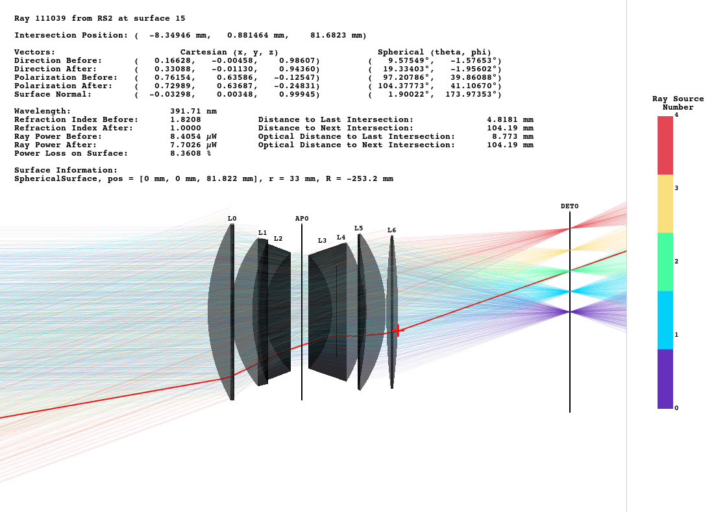
Fig. 1.12 Side view of the objective.#
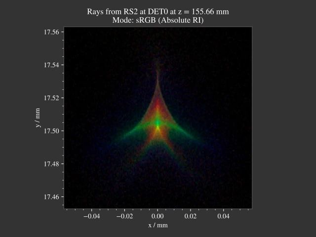 Fig. 1.13 PSF of point source with 10° to the optical axis.# |
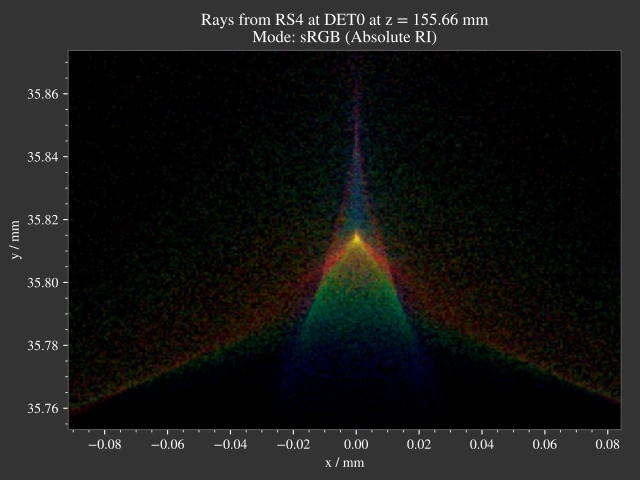 Fig. 1.14 PSF of point source with 20° to the optical axis.# |
1.7. GUI Automation#
File: examples/gui_automation.py
An example of GUI automation. Position and size of a line source that illuminates a sphere lens are varied at runtime. There is a clearly visible spherical aberration of the lens. The automation function can be rerun by pressing the button in the “Custom” GUI tab.

Fig. 1.15 Spherical aberration of a shift ray beam.# |
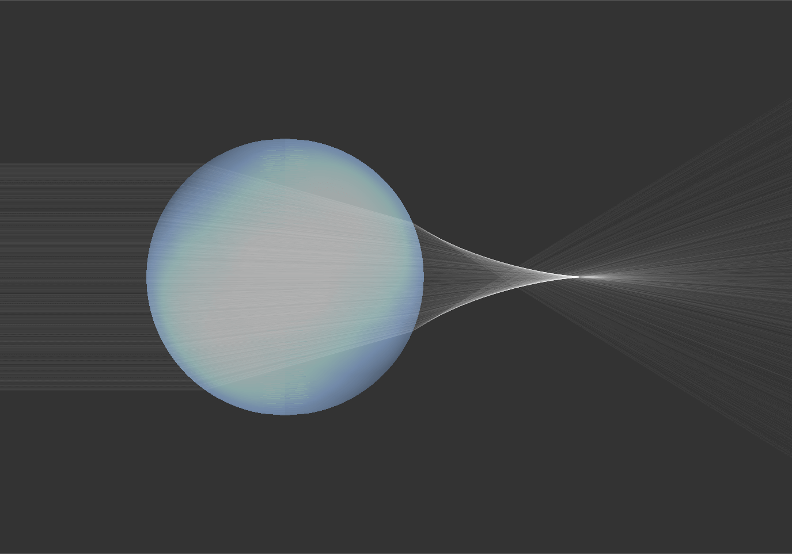 Fig. 1.16 Combined spherical aberration.# |
1.8. LeGrand Eye Model#
File: examples/legrand_eye_model.py
A geometry with the paraxial LeGrand eye model. Cardinal points, exit and entrance pupils are calculated and marked inside the scene.

Fig. 1.17 Eye model side view.#

Fig. 1.18 Tilted view with visible pupil.#
1.9. Image Render#
File: examples/image_render.py
A simple imaging system consisting of a single lens. Spherical aberration and distortion are apparent. By using the aperture stop the aberrations can be limited, approximating the paraxial case for a very small diameter. The size of the stop and the test image are parameterizable through the “Custom” GUI tab.
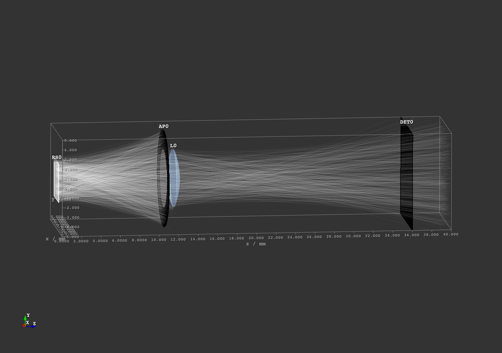
Fig. 1.19 Scene overview for a aperture radius o 3.0 mm.#
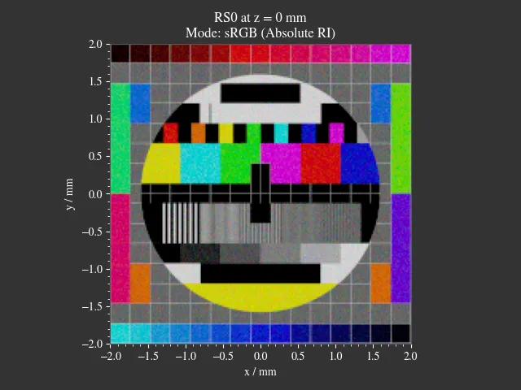
Fig. 1.20 Source Image#
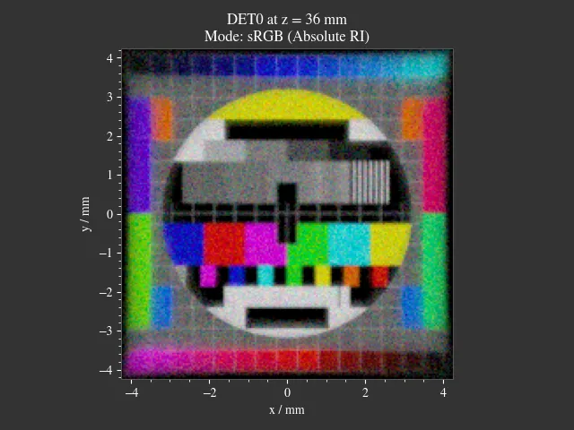 Fig. 1.21 Detector image with a 1.5 mm stop radius.# |
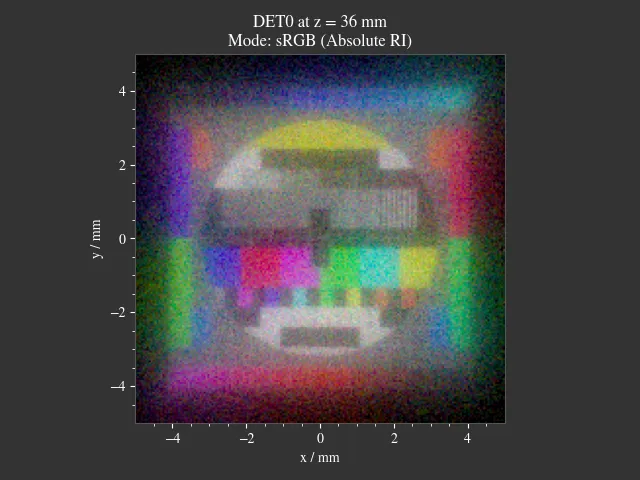 Fig. 1.22 Detector image with a 3.0 mm stop radius.# |
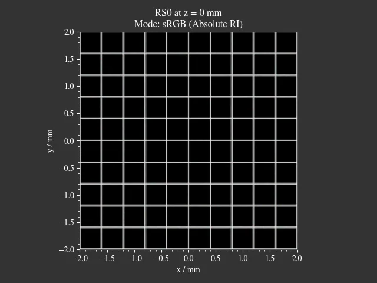 Fig. 1.23 Grid source image.# |
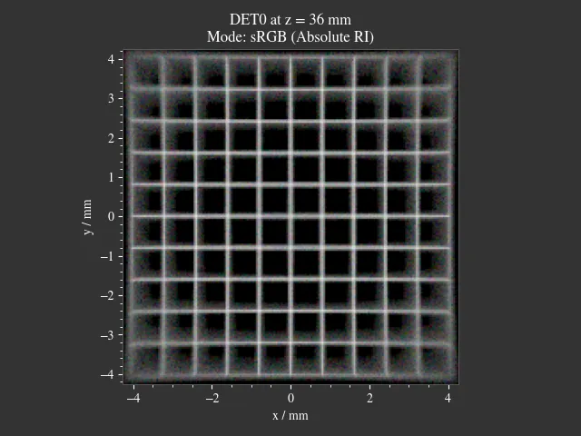 Fig. 1.24 Detector image with a 1.5 mm stop radius.# |
1.10. Image Render Many Rays#
File: examples/image_render_many_rays.py
Comparable to the Image Render example. Same lens setup, but it is traced with many more rays by using the iterative render functionality. This is done for multiple image distances and without needing to start a GUI.
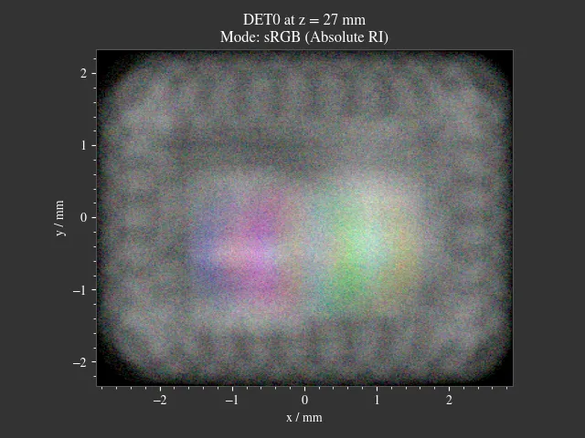 Fig. 1.25 Detector image at 27 mm.# |

Fig. 1.26 Detector image at 30 mm.# |
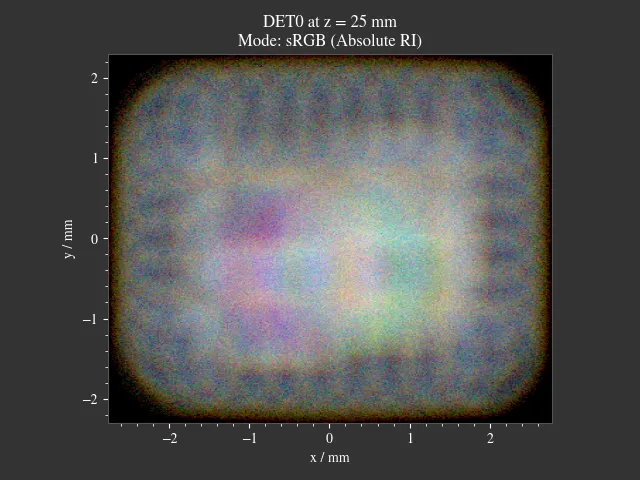 Fig. 1.27 Detector image at 33 mm.# |
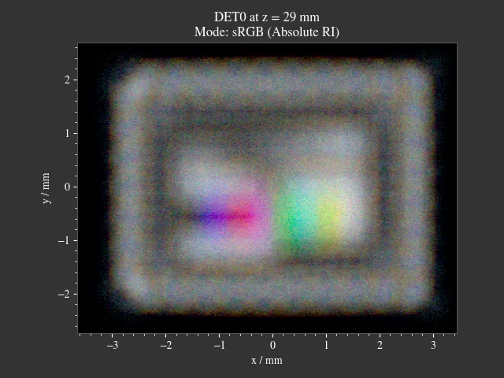 Fig. 1.28 Detector image at 36 mm.# |
1.11. IOL Pinhole Imaging#
File: examples/IOL_pinhole_imaging.py
Simulation of an Alcon IQ intraocular lens (IOL) in the Arizona Eye Model. A pinhole is rendered for three different viewing distances.
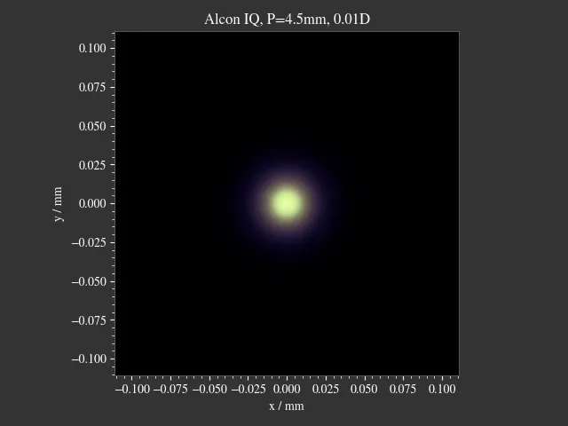 Fig. 1.29 0.01 D focus.# |
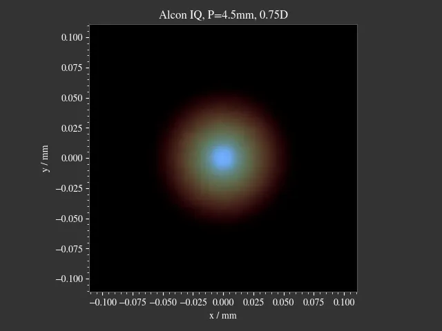 Fig. 1.30 0.75 D focus.# |
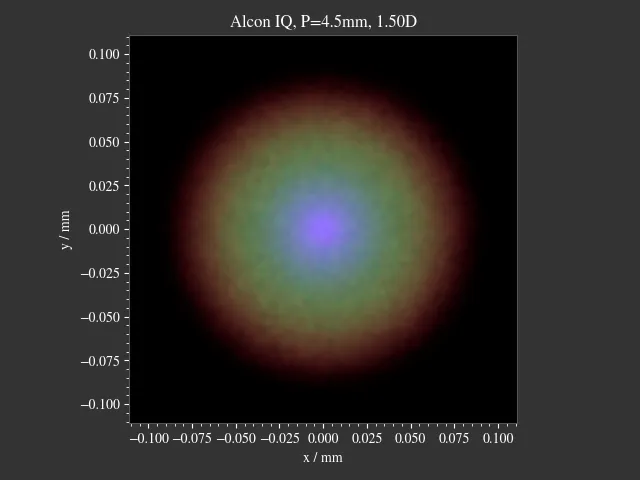 Fig. 1.31 1.50 D focus.# |
1.12. Keratoconus#
File: examples/keratoconus.py
A simulation of vision through a patient’s eye with progressing levels of keratoconus. Parameters are taken from the work of Tan et al. (2008).
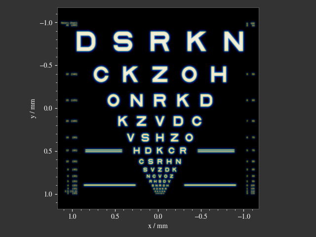 Fig. 1.32 Healthy eye.# |
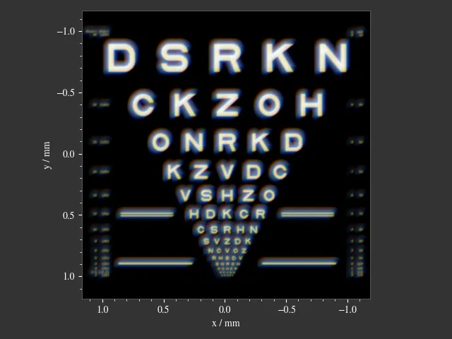 Fig. 1.33 Mild keratoconus.# |
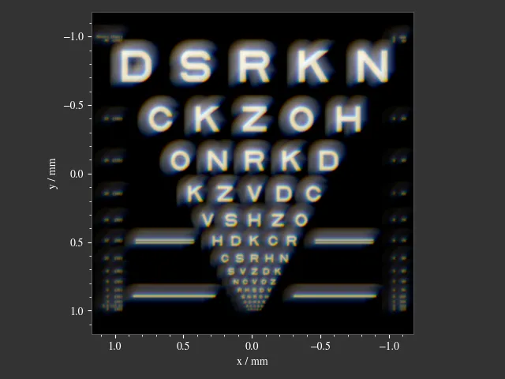 Fig. 1.34 Advanced keratoconus.# |

Fig. 1.35 Severe keratoconus.# |
1.13. Microscope#
File: examples/microscope.py
A more complex microscope setup with a objective, tubus and eyepiece group as well as the human eye as imaging system. The infinity corrected microscope is loaded in multiple parts from ZEMAX (.zmx) files that are were built from patent data.
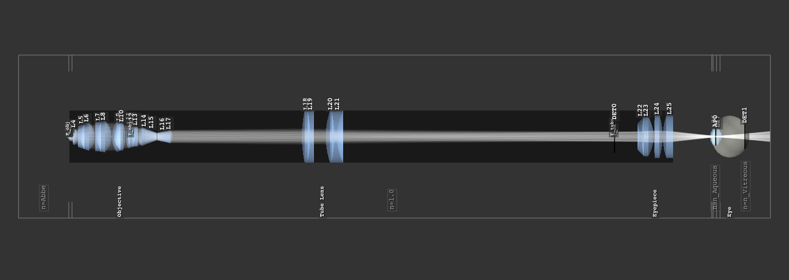
Fig. 1.36 Overview of the imaging system.#
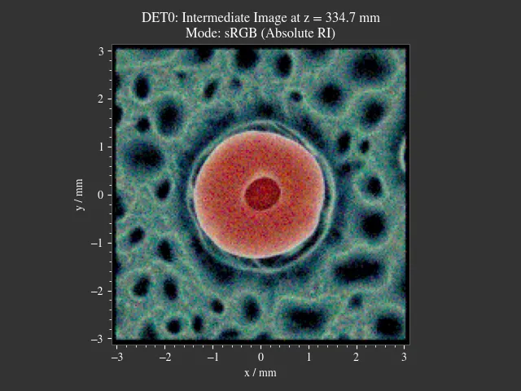 Fig. 1.37 Intermediate image.# |
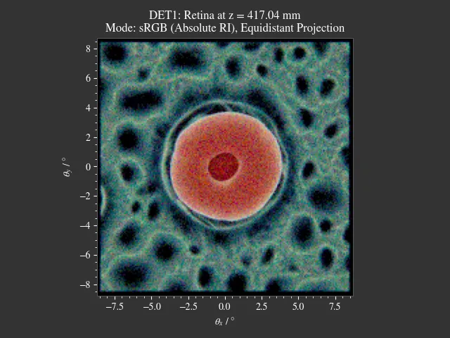 Fig. 1.38 Human visible image.# |
1.14. Prism#
File: examples/prism.py
A prism example where light is split into its spectral components. Light spectrum and materials are parameterizable through the “Custom” GUI tab.
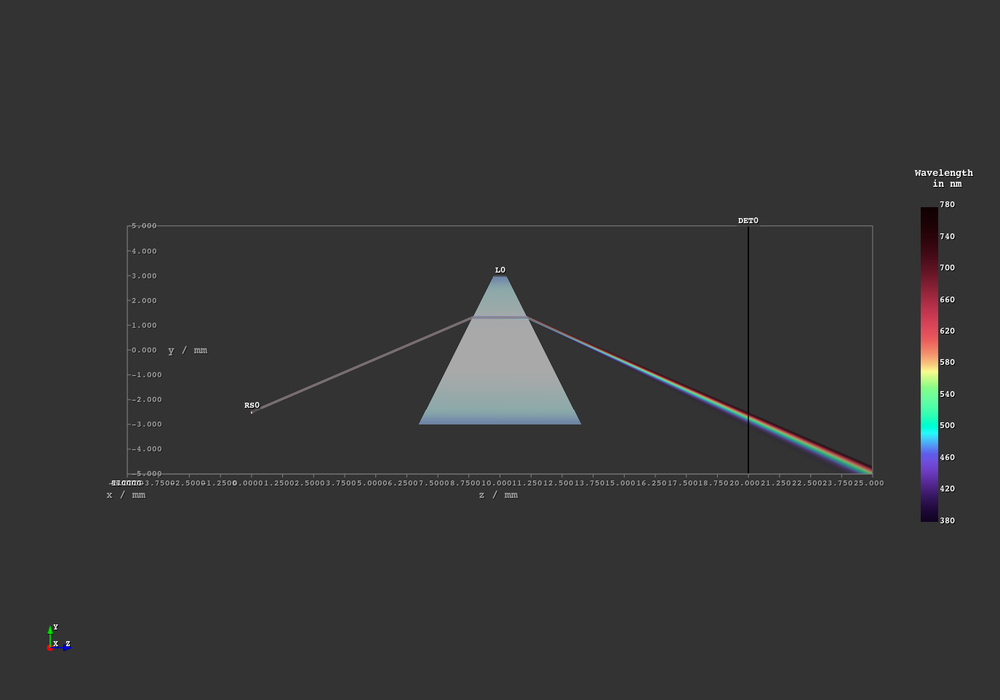
Fig. 1.39 Light propagation side view.#
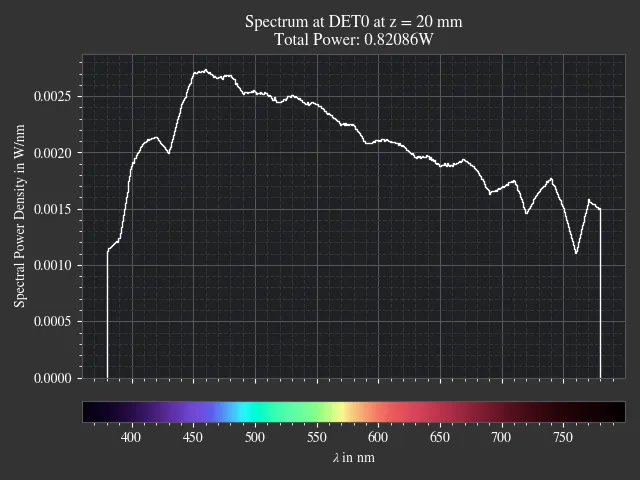 Fig. 1.40 D65 daylight spectrum.# |
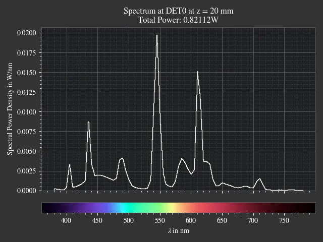 Fig. 1.41 F11 flourescent light spectrum.# |
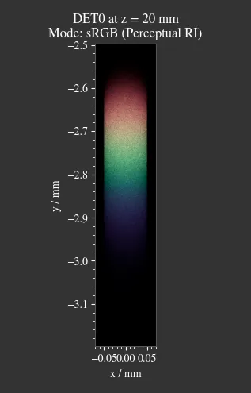 Fig. 1.42 Detector image for a D65 light spectrum and LAK8 (Abbe number 53.83).# |
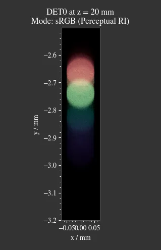 Fig. 1.43 Detector image for a F11 light spectrum and LAK8 (Abbe number 53.83).# |
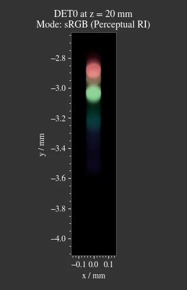 Fig. 1.44 Detector image for a F11 light spectrum and LAK8 (Abbe number 28.53).# |
1.15. PSF Imaging#
File: examples/psf_imaging.py
Demonstrates image formation by convolution of a resolution chart and a halo PSF.


{kind=link}
{kind=link}
{kind=link}
{kind=link}
{kind=link}
{kind=link}
{kind=link}
{kind=link}
{kind=link}
{kind=link}
{kind=link}
{kind=link}
{kind=link}
{kind=link}
{kind=link}
{kind=link}
{kind=link}
{kind=link}
{kind=link}
{kind=link}
{kind=link}
{kind=link}
{kind=link}
{kind=link}
{kind=link}
{kind=link}
{kind=link}
{kind=link}
{kind=link}
{kind=link}
{kind=link}
{kind=link}
{kind=link}
{kind=link}
{kind=link}
{kind=link}
{kind=link}
{kind=link}
{kind=link}
{kind=link}
{kind=link}

Fig. 1.47 Resulting image. Displayed linear to human perception.#
1.16. Refraction Index Presets#
File: examples/refraction_index_presets.py
This example displays different plots for the refraction index presets.

Fig. 1.48 Refractive index curve for glasses.# |

Fig. 1.49 Abbe number diagram for glasses.# |

Fig. 1.50 Refractive index curve for plastics.# |

Fig. 1.51 Abbe number diagram for plastics.# |

Fig. 1.52 Refractive index curve for miscellaneous materials.# |

Fig. 1.53 Abbe number diagram for miscellaneous materials.# |
1.17. Spectrum Presets#
File: examples/spectrum_presets.py
An example loading multiple light spectrum plots, including the sRGB primaries and standard illuminants.
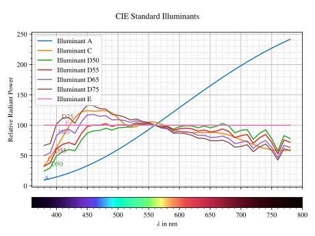 Fig. 1.54 CIE standard illuminants.# |

Fig. 1.55 CIE LED standard illuminants.# |
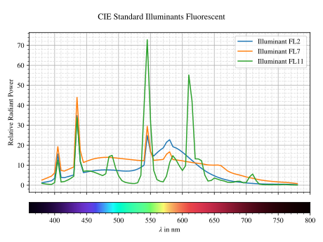 Fig. 1.56 Selected CIE flourescent lamp illuminants.# |
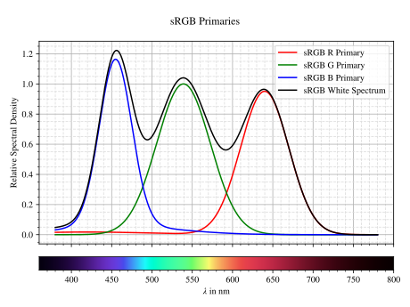 Fig. 1.57 Exemplary spectral curves for the sRGB color space primaries.# |
{kind=link}
{kind=link}
{kind=link}
{kind=link}
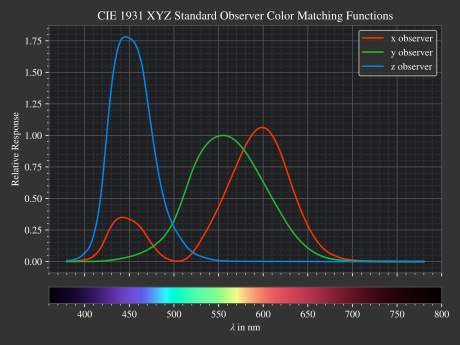
Fig. 1.58 Color matching functions for the CIE 1931 XYZ 2° standard observer.#
1.18. Sphere Projections#
File: examples/sphere_projections.py
This script demonstrates the effect of different projections methods for a spherical surface detector. Multiple point sources emit an angular cone spectrum from the spherical center of a spherical detector. The detector view then displays an equivalent of a Tissot’s indicatrix.
{kind=link}
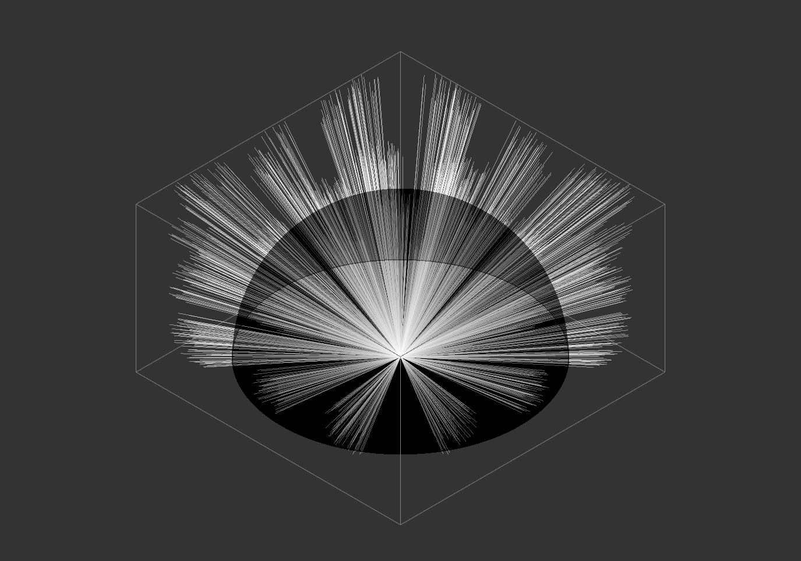
Fig. 1.59 Scene overview.#
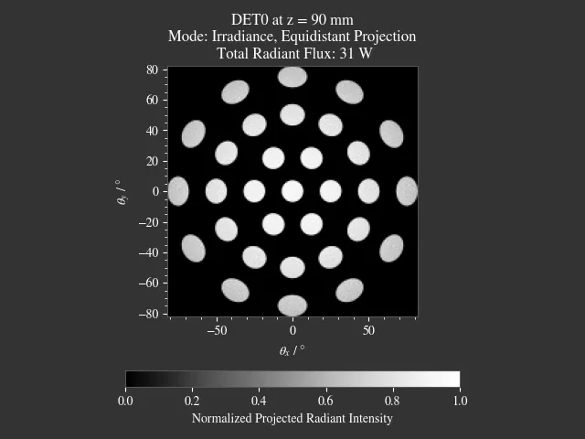 Fig. 1.60 Equidistant map projection.# |
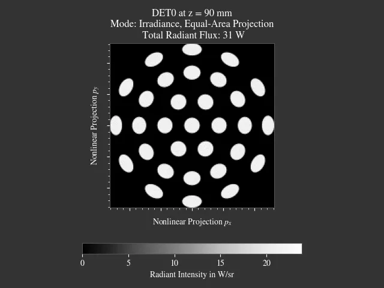 Fig. 1.61 Equal-Area map projection.# |
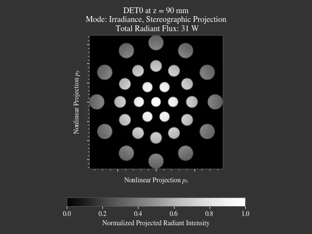 Fig. 1.62 Stereographic map projection.# |
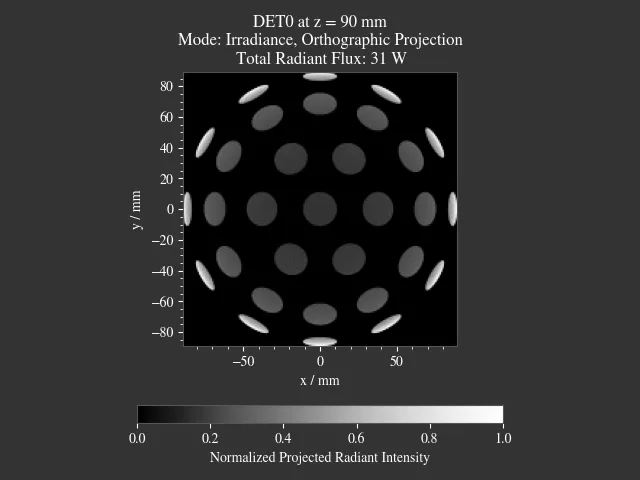 Fig. 1.63 Orthographic map projection.# |
{kind=link}
{kind=link}
{kind=link}
{kind=link}
1.19. Spherical Aberration#
File: examples/spherical_aberration.py
The example demonstrates the refractive error of a spherical sources by tracing a paraxial and a non-paraxial light beam for comparison. This is the Quickstart example with many explanations in the code’s comments.

Fig. 1.64 Side view of the setup.#

Fig. 1.65 Zoomed-in focal region.#